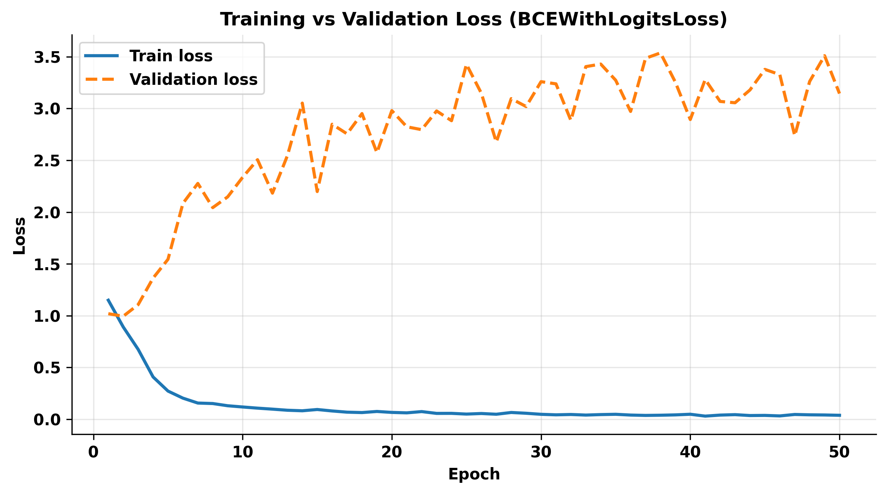
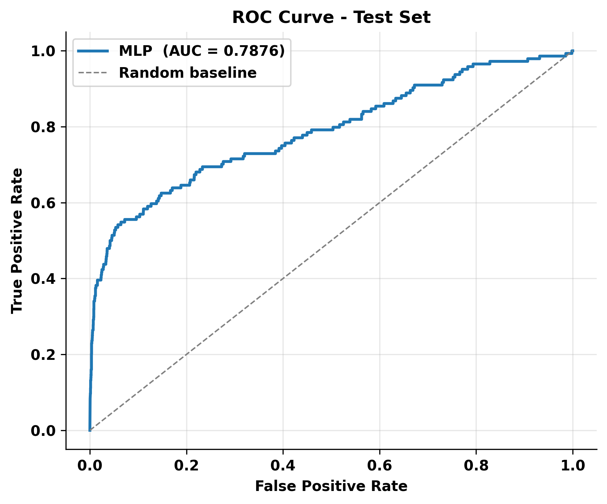
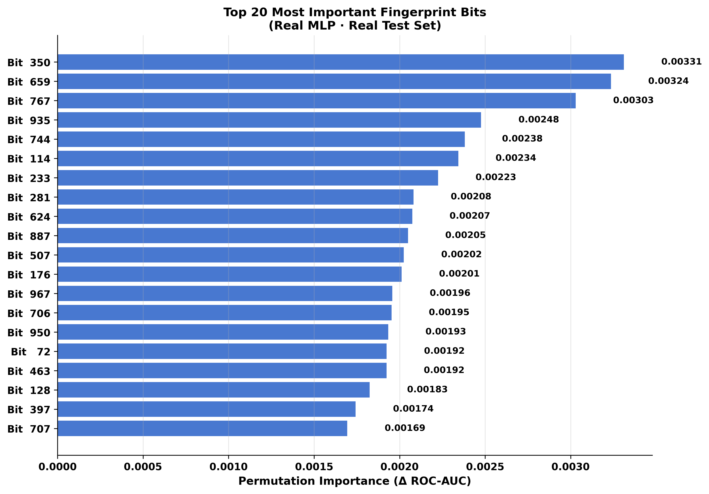

AI-Driven Drug Discovery:
Predicting HIV-1 Protease Inhibition
A deep learning classifier trained on 41,000+ chemical compounds to identify HIV-1 protease inhibitors from molecular fingerprints — compressing years of wet-lab screening into milliseconds of computation.
Only 3.5% of compounds in the dataset are active HIV-1 protease inhibitors — a severe class imbalance. A model that always predicts "Inactive" achieves 96.5% accuracy while discovering zero drugs.
To fix this, we applied weighted binary cross-entropy with a positive-class penalty of 27×, forcing the model to treat each missed active compound as far more costly than a false alarm.

Fig 1. Dataset class distribution — 1,443 actives vs. 39,684 inactives across 41,127 compounds (ChEMBL HIV screen)

Fig 2. Morgan fingerprint bit-vectors — 2048-bit circular hash encoding of each molecule's atomic neighborhoods (radius = 2)
Raw SMILES strings are converted to 2048-bit Morgan fingerprints (radius = 2), encoding circular chemical neighborhoods around each atom into a fixed-length bit-vector a neural network can read.
These bit vectors feed a 3-layer MLP (2048 → 512 → 256 → 1) with ReLU activations, 50% dropout, and Adam optimization, trained for 50 epochs on an 80/10/10 train/val/test split.
→ 256, ReLU, Drop(0.5)
→ 1, Sigmoid → P(active)
Training and validation losses converge smoothly over 50 epochs without divergence, confirming the model generalizes to unseen compounds. Dropout (p = 0.5) prevents memorization of majority-class inactives.
The validation loss stabilizes around epoch 20, suggesting the weighted loss term effectively focuses learning on rare active compounds early in training.

Fig 3. Train and validation loss over 50 epochs — smooth convergence, no overfitting
Evaluated on 4,112 Held-Out Compounds
Test set = 10% of dataset · confidence threshold = 0.5

AUROC = 0.788
Fig 4. ROC Curve — strong discrimination between actives and inactives.
Diagonal = random chance.

AP = 0.356
Fig 5. Precision-Recall Curve — 10× above the 0.035 random baseline.
Critical metric for imbalanced data.

58 True Positives
Fig 6. Confusion Matrix — 58 of 144 actives correctly identified in the test set.
Development & Interpretability

Fig 7. Average Precision across model variants — final configuration achieves AP = 0.356, the best among all experiments.

Fig 8. Top-20 fingerprint bits by ΔAUC — tertiary amines, phenols, and aromatic fragments are the most predictive chemical motifs.